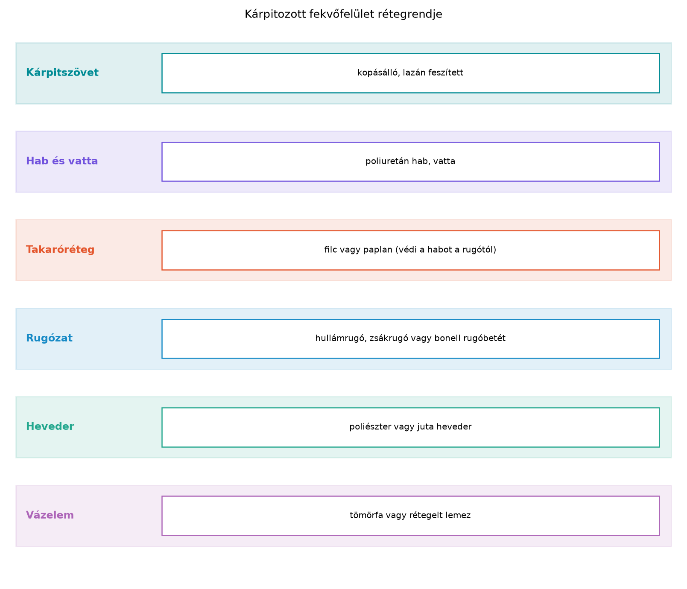

Egy megrendelő kétszemélyes ágyat szeretne keskeny lépcsőházú, régi lakásba. Az ajtó és a lépcsőforduló miatt az ágyat szét kell tudni szerelni, majd a hálószobában újra összeállítani. Ha a bútor egyben készül, a szállítás lehetetlen; ha rossz helyre kerül a vasalat, az ágy nyikorog, vagy szétesik. Ebben az alfejezetben a fekvőbútorok szerkezetét, a bontható ágyvasalatokat és a kárpitozás alaprétegeit tanuljuk meg úgy, hogy a vevőnek biztonságos, szállítható és kényelmes bútort tudjunk készíteni.
Képzelj el egy kétszemélyes ágyat. Két hosszanti oldalelem, egy fejtámla és egy lábtámla keretezi a fekvőfelületet. A keretbe ágyrács fekszik, arra matrac kerül. A sarkokban bontható ágyvasalat kapcsolja össze az oldalelemeket a fej- és lábtámlával. A keret alatt ágyneműtartó doboz lehet, amelynek alja lapanyag, oldalai pedig a kerethez csatlakoznak. Az ágy stabilitását a fejtámla szélessége és a sarkok merev, fészek nélküli kapcsolata adja.
Az alábbi rétegrend egy kárpitozott fekvőfelületet mutat: a fakeretre heveder, arra rugó, a rugóra filc vagy paplan, arra hab, majd kárpitszövet kerül. A pontos rétegrend termékenként és kárpitos együttműködésben változik.

A bontható kétszemélyes ágykeret robbantott axonometrikus ábrája mellett E-rendű felülnézet adja a méretláncot: belső szélesség 1630 mm, belső hossz 2030 mm, oldalelem-vastagság 25 mm, külső szélesség 1680 mm (lásd az 1. példát). A sarkokban a fej- és lábtámlán az ágyvasalat akasztós fele, az oldalelem végén az ellendarabja ül; az ágyrácstartó léc az oldalelemek belső oldalán fut.
Definíció. A fekvőbútor olyan bútor, amelynek elsődleges rendeltetése a fekvő testhelyzet kényelmes megtámasztása és a pihenés, alvás. Jellemző típusai: az ágy, a heverő, a kanapé, a fotelágy és az emeletes ágy.
Csoportosítás.
A fekvőbútor méretezésénél mindig a matracméretből indulunk ki. A gyakori magyarországi matracméretek tájékoztató értékek, és termékcsaládonként eltérhetnek:
| Megnevezés | Szélesség (mm) | Hossz (mm) |
|---|---|---|
| Egyszemélyes ágy | 900 | 2000 |
| Egyszemélyes, bővített | 1200 | 2000 |
| Kétszemélyes ágy | 1400 | 2000 |
| Kétszemélyes, nagy | 1600 | 2000 |
| Extra széles | 1800 | 2000 |
A gyermekágyak hossza gyakran 1600–1800 mm, a junior ágyaké 1800–1900 mm; ezt a megrendelővel és a matracszállítóval kell egyeztetni (ellenőrizendő: aktuális matracméretek).
A legegyszerűbb fekvőbútor az egyszemélyes ágy. Váza lehet tömörfa keret, vagy lapanyagból készült korpusz. A teherviselő elemek:
A kétszemélyes ágy hasonló, de a keresztirányú merevség miatt a fejtámlát és a lábtámlát erősebb anyagból vagy szélesebb elemként készítjük. A nagyobb fekvőfelület miatt gyakran középen egy keresztmerevítőt vagy lábközépsőt helyeznek el. A lábak lehetnek különálló, állítható csavaros lábak, vagy a fej- és lábtámla hosszabbításai.
Szabály. Az ágy belső méretét mindig a matracméretből számoljuk. A belső szélesség a matrac szélessége plusz oldalanként 10–20 mm játék, hogy a matracot kényelmesen be lehessen tenni, de ne csúszkáljon. A belső hossz hasonlóan a matrac hossza plusz 10–20 mm játék. A túl nagy hézag beverheti a lepedőt, és pontatlan hatást kelt; a túl kicsi hézag megnehezíti az ágyhúzást.
Példa. 1600 × 2000 mm matrac esetén oldalanként 15 mm játékkal: A külső szélesség akkor 1630 mm + 2 · 25 mm oldalelemvastagság = 1680 mm, ha az oldalelemek vastagsága 25 mm.
Ágyrács. Az ágyrács felfekszik az oldalelemek belső oldalára szerelt lécre, vagy az oldalelemekbe mart ágyrácstartó horonyba. A rács lehet:
A matrac alatt mindig legyen szellőzés. A zárt ágyneműtartó alja sem érhet közvetlenül a padlóhoz, mert a pára befullasztja a matracot.
Ágyneműtartó. Az ágy alatti dobozt gyakran bútorlapból készítjük. A doboz előlapja lehet felnyíló, fiókos vagy gázemelővel nyitható. A fiókok sínrendszere, a gázemelő teherbírása és a zsanérok száma a használati terheléstől függ (ellenőrizendő: vasalatgyártói adatlap).
A heverő olyan alacsony fekvőbútor, amely nappal ülésre is alkalmas, de a fekvőfelülete rendszerint fix. Kárpitozott keretből és oldaltámlákból áll. A belső váz általában tömörfa vagy rétegelt lemez, a fekvőfelület hevederezett, habosított, és szövettel borított. A heverőhöz gyakran ágyneműtartó tartozik.
A kanapé elsősorban ülőbútor, de az átalakítható változat ággyá nyitható. A kanapéágy mechanikája lehet:
A kanapé belső vázát úgy kell kialakítani, hogy a mechanizmus mozgása ne érjen a kárpitba; a vasalat furatkiosztása és a fellépő erők miatt a gyártói sablont be kell tartani (ellenőrizendő: termékadatok).
Az emeletes ágy két fekvőfelületet helyez egymás fölé. Alsó és felső matrac mérete gyakran azonos, de a felső ágy magassága miatt a balesetvédelem szigorú.
Szabvány. Az emeletes ágyakra és a magasított gyermekágyakra európai biztonsági szabvány vonatkozik (MSZ EN 747-1, az emeletes és magasított ágyak biztonsági követelményei) (ellenőrizendő: a szabványszám és a hatályos kiadás, a határértékek). A gyakorlatban a következő pontokat kell figyelembe venni:
Az ábra a biztonsági elemek helyét mutatja: a korlát magasságát a fekvőalap (ágyrács) felső síkjától és a matrac tetejétől is mérjük, ezért az ágyon jelölni kell a legnagyobb megengedett matracvastagságot. A részlet a korlát vége és az oszlop között maradó, beszorulást okozó rést (HIBÁS) és a rés nélküli csatlakozást (HELYES) állítja szembe.
Gépbiztonság. Az emeletes ágy alkatrészeinél is ugyanaz a szabály: gépi műveletet betanított, felügyelt tanuló végezhet; védőberendezés nélkül, egyedül, fáradtan ne dolgozzon. A létrafokok és a korlátléc végeinek csiszolásánál a kerekítő marás, csiszolás a vonatkozó gépbiztonsági előírásokkal történjen.
A szállíthatóság és a szerelhetőség miatt a fekvőbútorok kerete gyakran bontható vasalattal készül. A legelterjedtebb típusok:
Szabály. A bontható kötés pontos furathelyet és merőleges csatlakozófelületet igényel. A vasalatot mindig a gyártó által megadott furatátmérővel, mélységgel és csavarmérettel szereljük. A túl mély furat gyengíti az anyagot, a túl sekély furat miatt a vasalat nem húz össze. A vasalatok teherbírása eltér; a nagyobb ágyaknál válasszunk erre tervezett, fémből készült horonyvasalatot (ellenőrizendő: gyártói teherbírási adat).
Technológiai sorrend bontható ágykerethez.
A vasalatok furatainak elkészítésénél használj sablont. A kézi előrajzolás kis eltérései miatt a keret nyikoroghat, vagy a matrac nem fekszik fel egyenletesen.
A gyártás anyagtól és darabszámtól függ. Tömörfa gyártásnál a keret alkatrészeit szálirány szerint jelöljük, gyaluljuk, csapozzuk. Lapanyagból történő gyártásnál a fő lépések:
A gyártási műveletek gépbiztonsága: a körfűrészgépen hasítóék, védőburkolat, tolófa használata; a fúrógépen szorító; az élzárásnál a kéz ne érintse a ragasztási zónát; a csiszológépnél elszívás és légzésvédelem. Továbbvitt eredmény. A fekvőbútorok vasalatai, furatkiosztása és gyártási gyakorlata a Szerelési dokumentáció értelmezése és készítése; az összeállítás megszervezése, a Idegencsapos és ragasztott szerkezetek szerelése; szorítóeszközök és prések, az Anyagszükséglet-számítás: tömörfa, lapanyag, élzáró, vasalat, ragasztó, felületkezelő és a vizsgafelkészítő részekben kerülnek elő újra. Az itt tanult belső méret- és vasalat-ellenőrzés a vizsgaremek kivitelezésénél is alapfeladat.
A kárpitozott fekvőbútorokat gyakran asztalos és kárpitos együtt gyártja. Az asztalos készíti a fakeretet és a merev elemeket; a kárpitos végzi a hevederezést, a rugózást, a habosítást és a huzat elkészítését. Az alábbiakat azért kell ismernünk, hogy a váz mérete és formája a kárpitozásra alkalmas legyen.
Fakeret. A váznak fűrészelt, tömör vagy rétegelt lemez elemei legyenek. A kárpitos a hevedereket a vázelemek belső oldalára kapcsolja, ezért a sarkok nem lehetnek élesek, a felületet csiszolni kell. A váz legyen száraz; túl nedves fa később vetemedik, a huzat hullámos lesz.
Hevederezés. A fekvőfelület vagy ülés alapját hevederek alkotják. A heveder lehet juta, poliészter, gumi vagy vegyes anyagú. A hevedert feszítve, egymásra merőlegesen vagy átlósan szövik. A feszítés erőssége határozza meg a felület alátámasztását. A túl laza heveder besüpped, a túl feszes kényelmetlen.
Rugózás. A kárpitozás tartósságát a rugó adja. Gyakori típusok:
A kárpitos a rugókat filccel vagy paplananyaggal fedi, hogy a habot ne vágják el.
Töltőanyagok. A leggyakoribb töltőanyag a poliuretán hab (hideghab). Különböző sűrűségben kapható; ülőfelülethez nagyobb sűrűség, háttámlához kisebb sűrűség jellemző (tájékoztató tartomány: ülés 35–45 kg/m³, háttámla 25–35 kg/m³ – ellenőrizendő: gyártói adat). A habot vattaréteggel vagy filccel borítják, hogy a szövet ne csússzon, és a forma puhább legyen. A toll- és vattatöltet hagyományos, de karbantartást igényel.
Huzat. A kárpitszövet legyen kopásálló, tisztítható és színtartó. A huzatot lazán, de ráncmentesen feszítik. A varratok a sarkoknál és a párnatoldalnál megerősítettek. A szövet kiválasztásánál nemcsak a színt, hanem a dörzsállóságot (pl. Martindale-ciklusszám) és a fényállóságot is nézni kell (ellenőrizendő: textilvizsgálati érték).
Az ábra az asztalos és a kárpitos munkájának határát mutatja: az asztalos a fakeretet készíti, erre kerül a szőtt heveder, a rugózat, a filc vagy paplan, a hab és végül a kárpitszövet.
Együttműködés a kárpitossal. Az asztalos adja meg a pontos vázméreteket, a kárpitos pedig a bevonat után a kész méreteket. A hab és a szövet vastagsága miatt a kész bútor mérete nő. Ezért a megrendelőnek a kész külső méretet és a fekvőfelület belméretét is egyeztetni kell. A kárpitosnak a fakeretbe nem szabad vakon kapocsgépelni; a csavarok, vasalatok és kábelek helyét meg kell jelölni.
1. példa – Ágykeret belső méretének ellenőrzése. Adott egy 1600 × 2000 mm-es matrac. A tervező oldalanként 15 mm játékot szeretne. Mekkora legyen a keret belső szélessége és hossza? Mekkora a külső szélesség, ha az oldalelemek vastagsága 25 mm?
Megoldás. Belső szélesség: Belső hossz: Külső szélesség: Ellenőrzés: külső szélesség = matrac + 2·játék + 2·oldalvastagság = 1600 + 30 + 50 = 1680 mm – egyezik. A belső méret 1630 mm > 1600 mm, tehát a matrac behelyezhető.
2. példa – Ágyneműtartó doboz lapanyagigénye. Egy ágy alá épített, nyitott doboz alja 1630 × 2030 mm-es, magassága 250 mm. Az anyag 18 mm vastag bútorlap. A doboz elemei: 1 db alj, 2 db hosszoldal, 2 db rövid oldal. Mekkora a nettó lapanyagfelület? Adjunk hozzá 15% szabási hulladékot, majd értékeljük, hány 2800 × 2070 mm-es tábla szükséges.
Megoldás. Az alj felülete: Két hosszoldal: Két rövid oldal: Nettó felület: Hulladékkal 15%: Egy 2800 × 2070 mm-es tábla felülete: Mivel 5,910 m² > 5,796 m², a nettó+15% hulladék alapján kettő tábla látszik szükségesnek. A valóságban a szabásterv dönt: ha a három nagylemez-elem nem fér el egy táblán a vágási ráhagyással, akkor is kettő tábla kell. Ezért a felületi számítás csak becslés, a tényleges táblaszámot a Szabásterv és szabástérkép, anyagkihozatal szerint kell meghatározni.
A fekvőbútor átadása előtt a következőket ellenőrizzük:
Egy asztalos egyszemélyes ágyat készített, de a vevő az ágyat a lépcsőfordulóban nem tudta felvinni, mert a fejtámla egy darabból állt, 1000 mm széles és 1200 mm magas volt. A hibát az okozta, hogy a rendelésfelvételkor nem beszélték meg a szállítási útvonalat. A javítás során a fejtámlát ketté kellett vágni, vasalattal láthatatlanul összeépíteni, majd a sarkoknál horonyvasalatra cserélték a ragasztott kötést. A tanulság: a fekvőbútoroknál a bontható szerkezetet és a szállíthatóságot a tervezéskor kell eldönteni, nem a szerelés közben.
1. feladat (A). Nevezd meg a fekvőbútorok négy típusát, és írd le, mi különbözteti meg az átalakítható bútort a fixtől.
2. feladat (A). Egy matrac 1400 × 1900 mm. Számítsd ki a belső szélességet és hosszt, ha oldalanként 12 mm játékot veszel.
3. feladat (B). Egy ágyneműtartó doboz belső mérete 1400 × 2000 mm, magassága 300 mm. Mennyi a nettó lapanyagfelület, ha az alj és a négy oldal 18 mm-es bútorlapból készül? Adj hozzá 10% hulladékot, és számold ki a szükséges felületet.
4. feladat (B). Sorolj fel legalább öt biztonsági ellenőrzőpontot egy emeletes ágy felső szintjén.
5. feladat (C). Válassz bontható ágyvasalatot egy 1800 × 2000 mm-es kétszemélyes ágyhoz, és indokold a választásodat. Mitől függ, hogy egy horonyvasalat megfelel-e?
6. feladat (D). Készíts vázlatos művelettervet egy 1600 × 2000 mm-es ágykerethez, amely bontható horonyvasalattal készül lapanyagból. A műveletterv legalább öt lépésből álljon; tüntesd fel az ellenőrzési pontokat.
Önellenőrzés – válaszok: 1. hamis (játék kell); 2. igaz (a rugós ágyrács rugalmasabb alátámasztást ad); 3. 10–20 mm (tájékoztató); 4. hogy a gyermek ne fordulhasson át (balesetvédelem); 5. horonyvasalat; 6. váz, heveder, rugó, filc/paplan, hab, huzat.
1. feladat. Típusok: fix, nagyobbítható, átalakítható, emeletes. A fix bútor fekvőfelülete állandó; az átalakítható nappal ülőbútorként, éjjel ágyként használható.
2. feladat.
3. feladat. Alj: Két hosszoldal: Két rövid oldal: Nettó: Hulladékkal:
4. feladat. Korlátmagasság, korláthézagok, létra merevsége és lépcsőosztása, stabilitás, éles peremek hiánya, figyelmeztető jelölés.
5. feladat. Horonyvasalat. Indok: rejtett, szerelhető, húzásra dolgozik, nagyméretű ágynál is megfelelő, ha a gyártói teherbírása elegendő. A furathelyek, a csavarok és a felfekvő felület pontossága a feltétel.
6. feladat. Műveletterv: 1. Lapszabás – ellenőrzés: méretek a szabásjegyzék szerint. 2. Élzárás – ellenőrzés: az élzáró feszes, nincs túllógás. 3. Vasalatfuratok fúrása sablonnal – ellenőrzés: furatmélység, furathelyek. 4. Próbaszerelés – ellenőrzés: derékszög, belső méretek, vasalatok feszesen ülnek. 5. Csiszolás – ellenőrzés: felület sima, él nem éles. 6. Végső szerelés és csomagolás – ellenőrzés: a bontható elemek külön egységben, vasalattal, szerelési útmutatóval.
A fekvőbútorok a fix, nagyobbítható és átalakítható típusokba sorolhatók; közös jellemzőjük, hogy a fekvőfelületet a matracméret határozza meg. A keret belső méretét a matrac szélessége és hossza plusz oldalanként 10–20 mm játék adja. A bontható ágyvasalatok – elsősorban a horonyvasalat – pontos furathelyeket, sablonos furást és merőleges felületeket igényelnek. Az emeletes ágy felső szintjén a korlát magasságát, a hézagokat, a létra merevségét és az éles peremeket biztonsági követelmények szerint kell ellenőrizni. A kárpitozott fekvőbútor rétegrendje: váz, heveder, rugó, filc vagy paplan, hab, huzat. A hab sűrűsége és a hevederezés feszessége a kényelmet és a tartósságot határozza meg; a pontos értékeket gyártói adatlapról kell venni. Továbbvitt eredmény: a fekvőbútorok vasalatai, huzattal való egyeztetése és gyártási gyakorlata a későbbi szerelési, kalkulációs és vizsgafelkészítő alfejezetekben újra előkerül, mert a pontos furatkiosztás, a belső méret és a szállíthatóság a kivitelezés sikerének alapja.